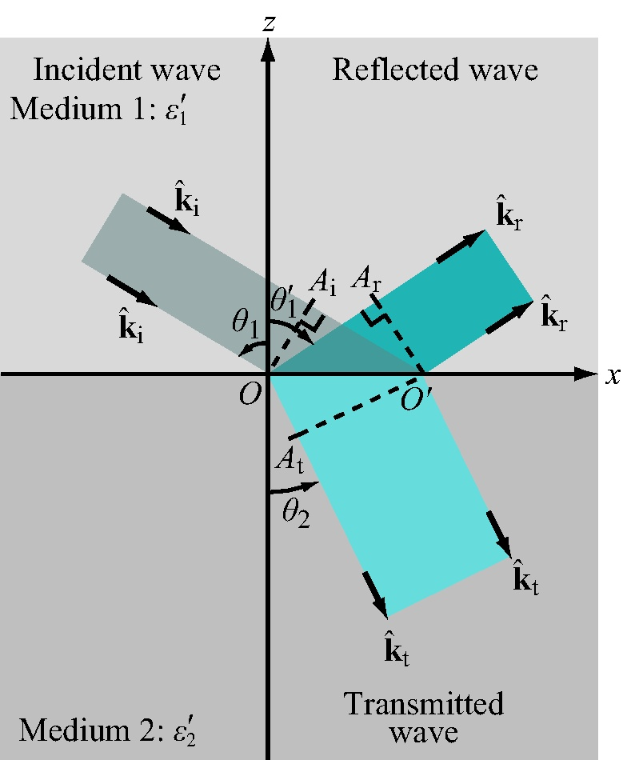

This module computes the reflection coefficients, transmission
coefficients, reflectivities and transmissivities for incidence in
medium 1 upon the planar boundary of a lossless or lossy
medium (medium 2) at any incidence angle, for both h and v
polarizations.
ϵ1=
ϵ1' -j
ϵ1''
ϵ2=
ϵ2' -j
ϵ2''
